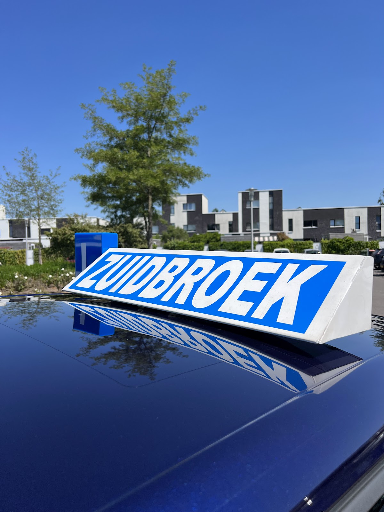
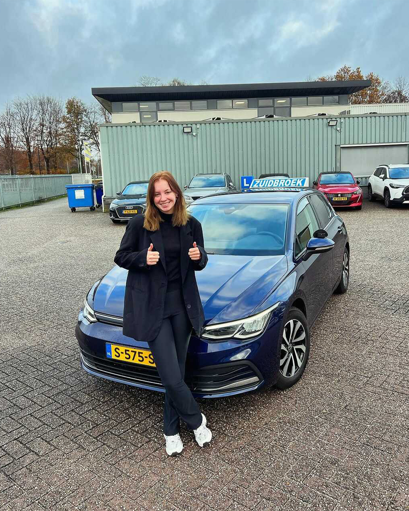
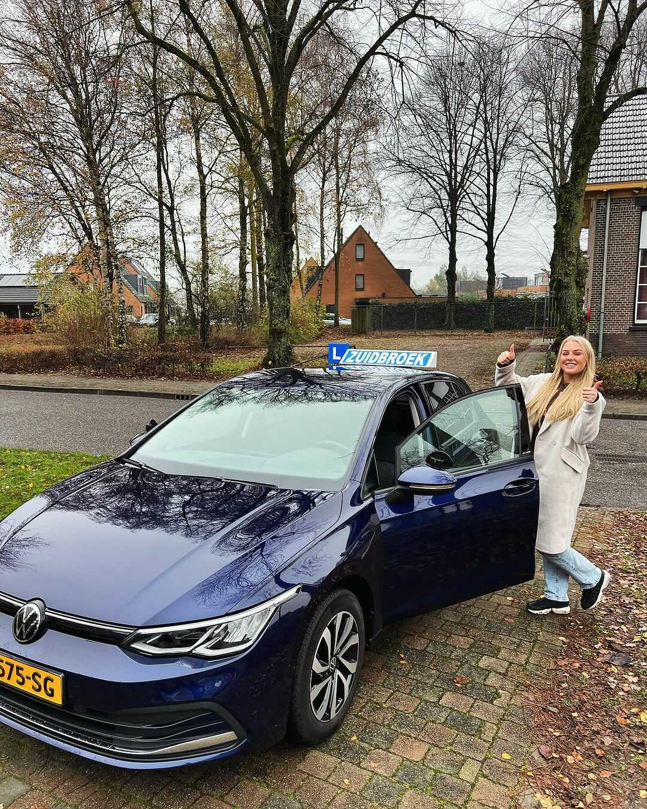
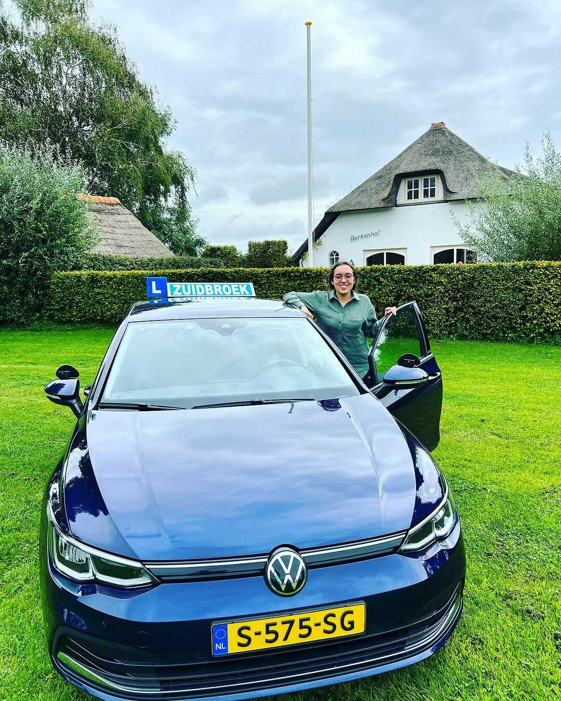
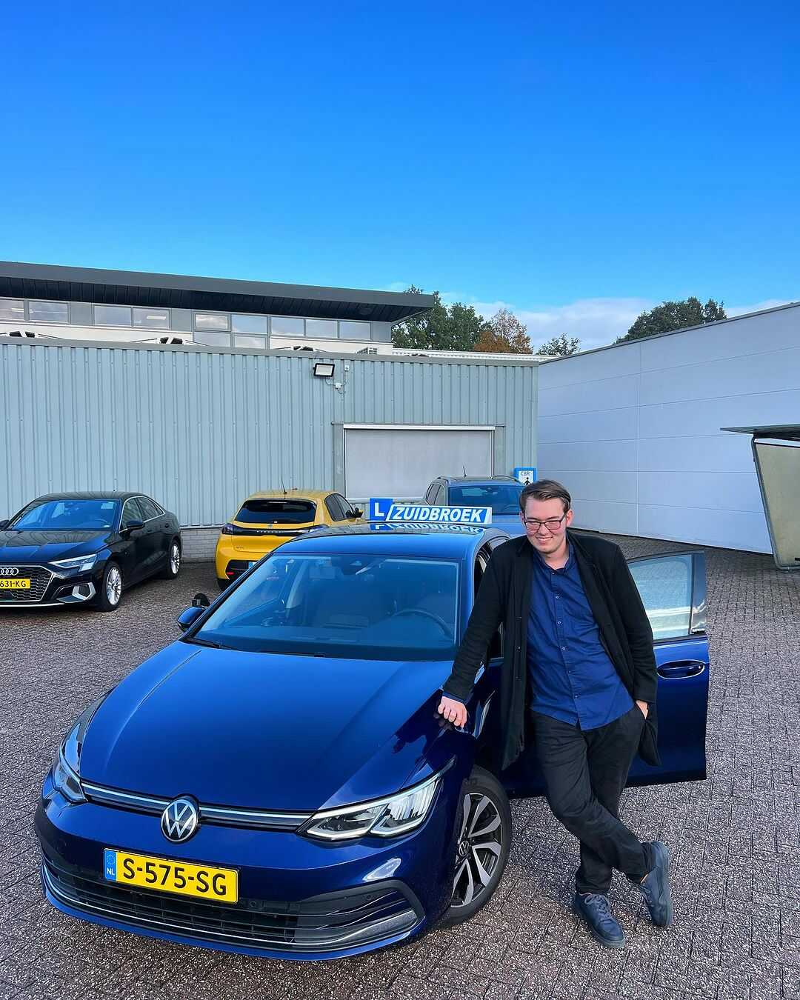
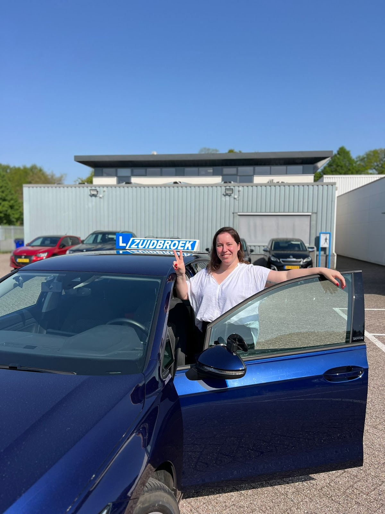
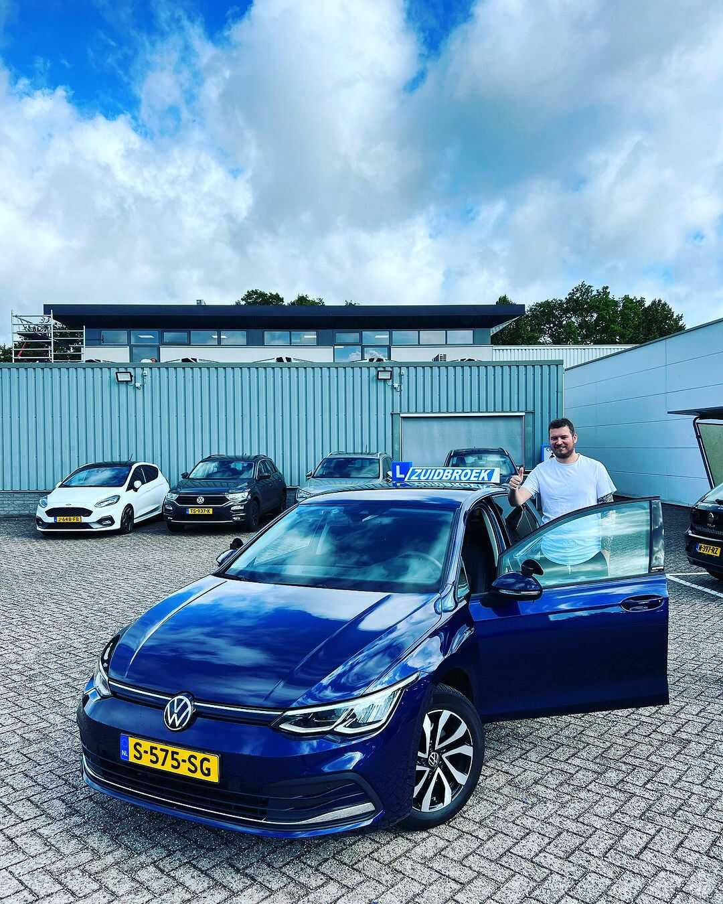
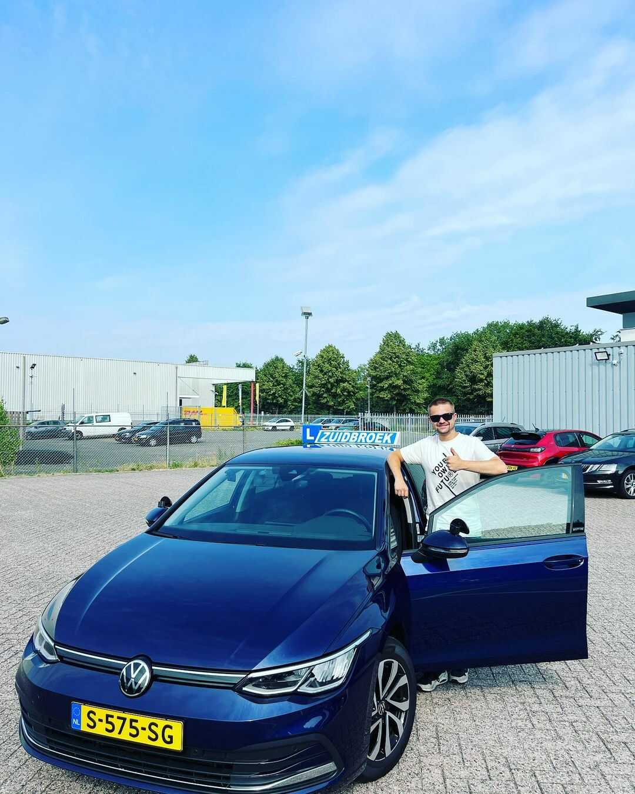
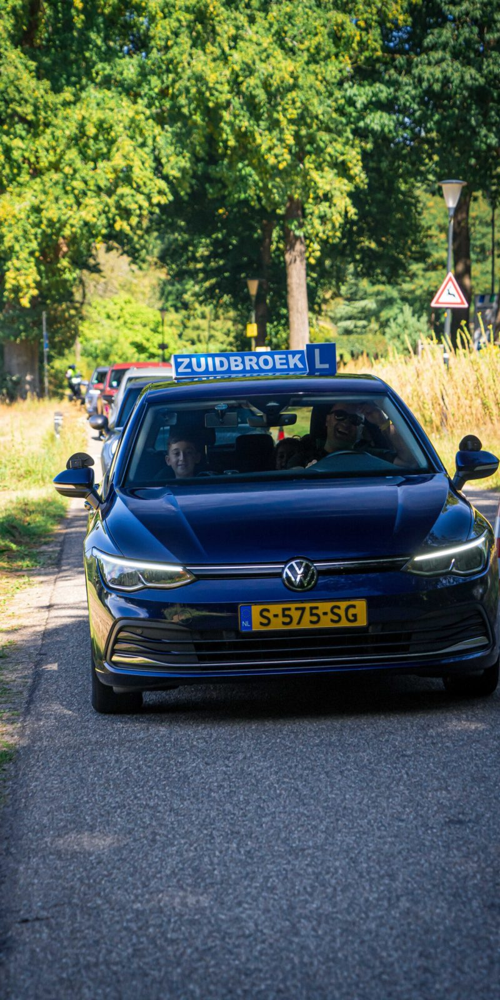
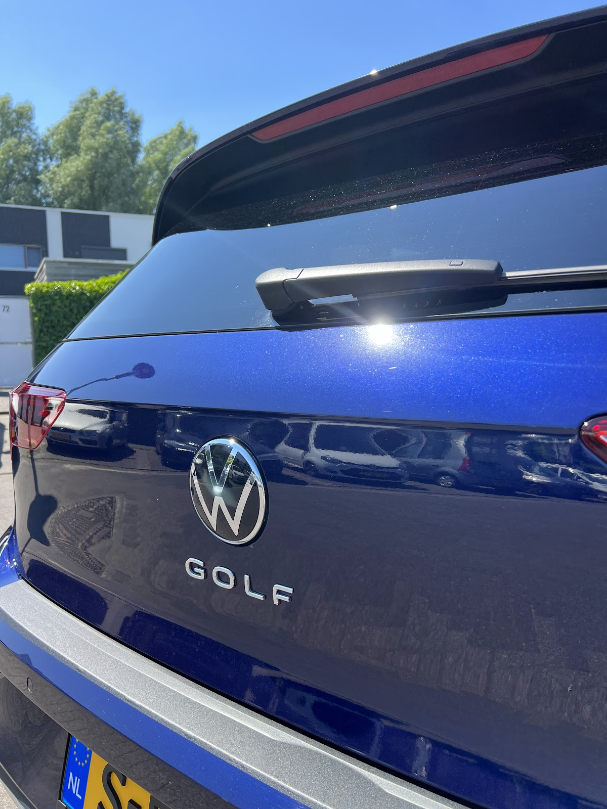

Rustig leren rijden in Apeldoorn.
Persoonlijk, professioneel en betrokken. Je leert bij ons stap voor stap rijden in een Volkswagen Golf 8, op momenten die in jouw week passen. Niet alleen om te slagen, maar om een veilige en zelfverzekerde bestuurder te worden.
5,0 op Google, uit 86 reviews

12+ jaar
ervaring met leerlingen in Apeldoorn
Wat leerlingen over Serdar zeggen
Rustig, duidelijk en geduldig. Dat komt in bijna elke review terug. En opvallend vaak: in één keer geslaagd.
“Serdar blijft rustig, legt alles duidelijk uit en zorgt ervoor dat je met vertrouwen de weg op gaat. Dankzij zijn goede instructie ben ik in 1 keer geslaagd!”
“Echt een top rijschool! Ik heb de rijlessen altijd met veel plezier gevolgd. Serdar legt alles rustig en duidelijk uit en zorgt ervoor dat je je snel op je gemak voelt. Er was altijd tijd voor een gezellig praatje en veel gelachen, maar ondertussen heb ik ook superveel geleerd. Dankzij de fijne begeleiding ben ik met veel vertrouwen mijn examen ingegaan. Bedankt voor alle leuke lessen, ik ga de ritjes stiekem nog wel missen. Zeker een aanrader!”
“Ik kijk goed terug op mijn lessen bij rijschool Zuidbroek! Je leert er met zelfvertrouwen rijden door het duidelijke plan dat je volgt en het geduld van de instructeur.”
“Ik heb een hele goede ervaring gehad bij deze rijschool! Leuke instructeur die je op je gemak stelt en zorgt voor een goede sfeer in de auto. Naast de gezelligheid weet Serdar ook op een duidelijke en rustige manier alles uit te leggen waardoor ik in 1 keer geslaagd ben :) Ik raad deze rijschool zeker aan!”
“De instructeur is ontzettend geduldig en legt alles helder uit. Dankzij zijn persoonlijke aandacht voelde ik me altijd op mijn gemak tijdens de lessen. Hij zorgt ervoor dat je stap voor stap vertrouwen krijgt achter het stuur, waardoor ik mijn rijbewijs met vertrouwen heb gehaald in een keer😁🥳. Echt een aanrader!”
5,0 gemiddeld uit 86 Google-reviews
Een paar van onze leerlingen
Allemaal met de blauwe Golf op de foto. Straks jij ook.







Zo leer je bij ons rijden
Van eenvoudig naar complex, in logische stappen. Elke les bouwt voort op de vorige.
Begin met een gratis proefles-
1
Je mag meteen beginnen
Je hoeft je theoriecertificaat nog niet te hebben om met praktijkles voor rijbewijs B te starten. Ken je de verkeersregels al wel, dan gaat je opleiding sneller: je houdt meer tijd over voor het rijden zelf.
-
2
Eerste les: sturen
Je zit zelf achter het stuur, maar de instructeur bestuurt de auto eigenlijk nog. Je begint met sturen, zodat je rustig went aan de auto.
-
3
Daarna de pedalen
Heb je het sturen onder de knie, dan verleggen we de focus naar de pedalen. In het begin ligt de nadruk op voertuigbeheersing.
-
4
Steeds een stap verder
Elke les komt er een nieuw onderdeel bij, tot je ook complexe verkeerssituaties beheerst. Het doel: zelfstandig en veilig de weg op, met vertrouwen.


Les in een Volkswagen Golf 8
Je rijdt in de nieuwste Golf, met alle recente veiligheidsopties. Een fijne, veilige auto om in te leren.
- Flexibele lestijden
- ’s Ochtends, ’s middags of in het weekend. Je lessen passen in jouw week, niet andersom.
- Op jouw tempo
- Elke leerling krijgt begeleiding die past bij hoe hij of zij leert.
Theorie leer je online
Verkeersregels, verkeersborden en veilig rijden: je oefent het in een eenvoudig online systeem dat altijd up-to-date is en aansluit op wat je voor het theorie-examen moet weten. Leren wanneer het jou uitkomt, op je telefoon of laptop.
Stap in.
Bel of app voor een gratis proefles, of laat je gegevens achter. Dan nemen we contact met je op.
06 16 70 81 67 info@rijschoolzuidbroek.nlAdres
Pythagorasstraat 172
7323 HL Apeldoorn
Bereikbaar
| ma t/m vr | 08:30 tot 17:00 |
| zaterdag | 12:00 tot 15:00 |
| zondag | gesloten |